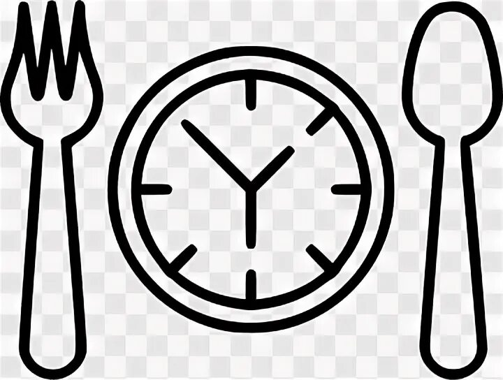

КАЛОРИИ (ПОЧЕМУ ОНИ РАБОТАЮТ И ПОЧЕМУ НЕОБХОДИМО БЕЖАТЬ ОТ ТРЕНЕРОВ, КОТОРЫЕ ГОВОРЯТ, ЧТО НЕТ). ЧАСТЬ 1
О том, почему мы всё-таки считаем калории, я уже писал здесь.
Почитайте те, кто думает, что это сложно и можно ли потом удерживать форму, не считая. Там коротко и полезно.
Ещё скажу сразу, что не существует ни одного научного исследования, доказывающего, что “калории не работают”. Как
раз наоборот — работают и позволяют довольно точно предсказать долгосрочные изменения в количественном составе
тела. Краткосрочные не очень — там преимущественно колебания воды. Примером тому служит, например, калькулятор калькулятор Кевина Холла, который позволяет очень точно рассчитать и предсказать изменения веса под конкретного человека.
Проверено — работает при условии, что подопытный не срывается, не врёт и поддерживает активность на одном уровне.
Заодно позволяет развеять все иллюзии касательно потери 100500 кг за месяц (и даже за три).
А вот “Калории считать не нужно” я хочу рассмотреть с двух ракурсов:
- У нас в проекте X калории считать не нужно.
- Калории не работают, кто вообще решил класть продукты в бомбовый калориметр, блаблабла, купи методигу.
Разберём:
Вариант один (“У нас в проекте X калории считать не нужно”) уважаю.

Действительно, калории можно не считать. Любой человек, погруженный в тему фитнеса и питания, в курсе, что для того, чтобы терять (вес/жир), нужен дефицит. Дефицит создаётся через снижение потребления и повышение трат.
Любая диета, которая для вас работает, помещает вас в дефицит за счёт сокращения наиболее энергетически ценных (т. е. высококалорийных) источников. Если диета не работает, значит, вы не оказались в дефиците. Любые продукты, которые вычёркиваются зож-адептами из рациона, являются просто очень калорийными.
Обвинять в ожирении конкретные продукты — клять сахар и восхвалять жиры, проклинать жиры и превозносить ягоды асаи, отказываться от мяса, убирать углеводы после 18:00 или заменять приём пищи сытным, но полупустым коктейлем из говна и палок (от сетевиков) — это всё вариации на тему сокращения калорий за счёт геноцида отдельных продуктов. Это работает. Но это всё равно что объяснять появление солнца на небосводе тем, что боженька проснулся и, запрыгнув в огненную колесницу, помчал по своим делам.
Можно сделать современнее, эффективнее, проще и умнее. Подсчёт даёт системность. И не забываем, что кроме калорий мы ещё манипулируем макронутриентами, создавая реально здоровое и разнообразное меню с минимумом ограничений.
Есть ещё отдельный вариант — объяснять отсутствие результата гормонами. На этой отмазке паразитируют другие тренера, которые вливают про “ей гормоны чинить надо, а они ей про калории”. Вот здесь путается тёплое с мягким. Гормоны чинить надо — это вопрос здоровья. Но похудения в дефиците калорий они не отменяют. Отёки от перекосов в уровне половых гормонов скрывают реальные результаты в потере жира (зачастую вес стоит, и только сантиметровая лента указывает на то, что под водой потаяло). Дефицит в работе щитовидной железы реально снижает обменные процессы, но не настолько, как принято раздувать. Мне встречались данные, что запущенный гипотиреоз в цифрах означает снижение обменных процессов до 90 ккал в сутки. Те, кто могут прочитать калорийность на упаковке и сопоставить цифры, — усмехнутся. Говорить, что диета не работает, “потому что гормоны”, — это как приписывать вмешательство злых духов в наводнения и нашествие саранчи. Если вы мэр города, то стоит делать поправку в бюджете на ликвидацию этих катаклизмов, а не разводить руками.
Надеюсь, аналогия понятна.
Поэтому калории МОЖНО не считать, но ЛУЧШЕ считать. Это нетрудно и доступно даже самым радикальным гуманитариям.
Собственно подсчёт калорий позволяет эффективно и даже с пользой для здоровья (!) работать самым безумным, дурацким и антизожным диетам. Полистайте, если не читали.